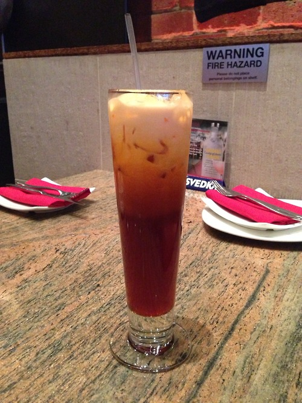
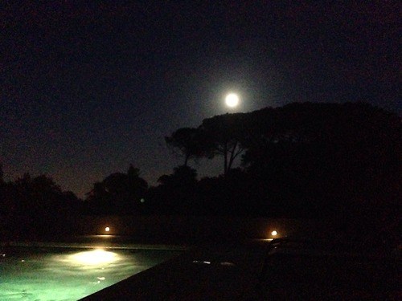

Friend sent me this when he was in SF. Someone used stickynotes to make Link from The Legend of Zelda.
One of our stops friday. In a
bakery , South Chinatown.
good pasteries but expensize Arizona iced tea.
Saw The Grand Budapest Hotel and ate enough candy to put an elephant to sleep.

Mothers day in the city. Got thai food at Osha. The drink in the picture is an iced tea which was very sweet. If you would like to check out this resturant click
here.
went on a hike in Portolla Valley. About 84 degrees directly in the sun but once under the cover of the trees teh temp dropped dramatically.

Had a few friends over and went swimming.